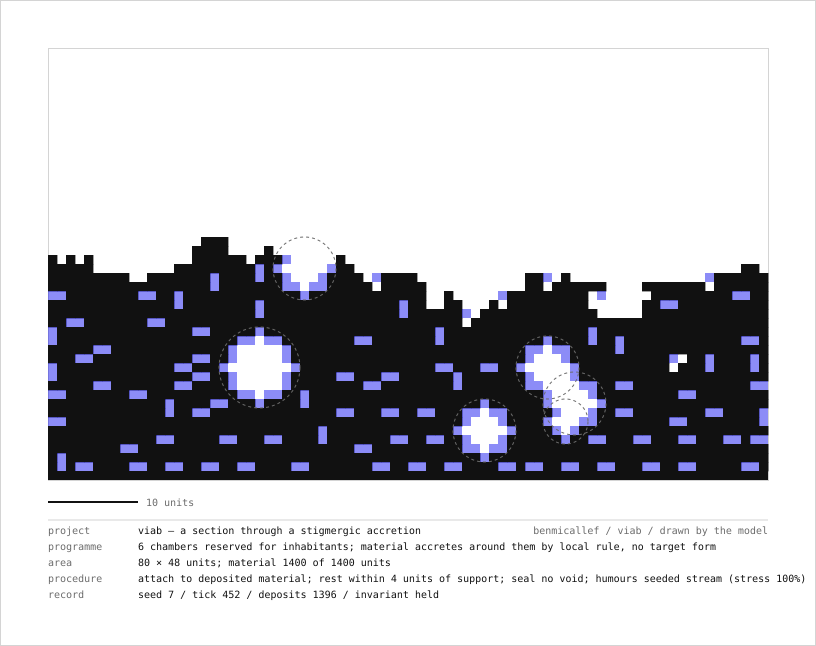
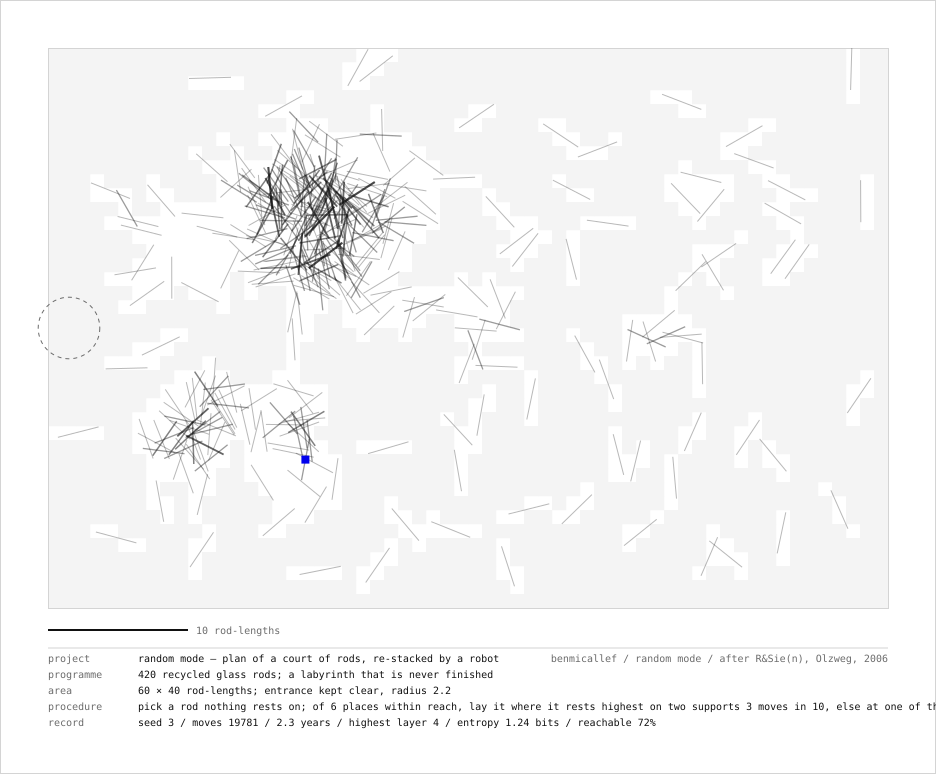
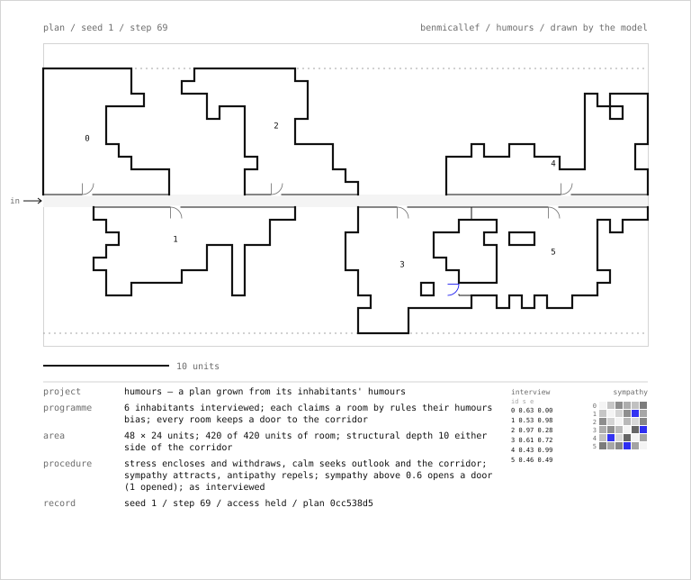
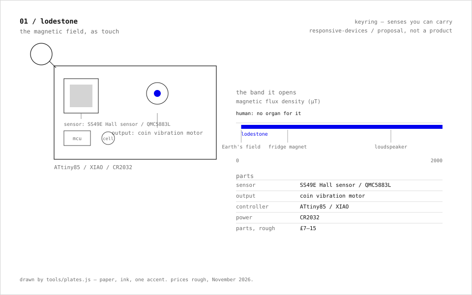
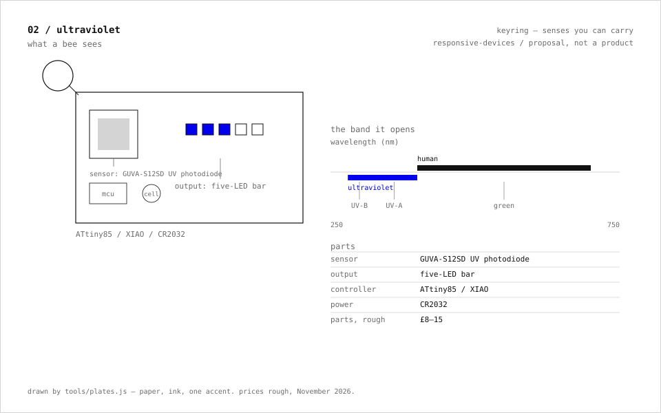
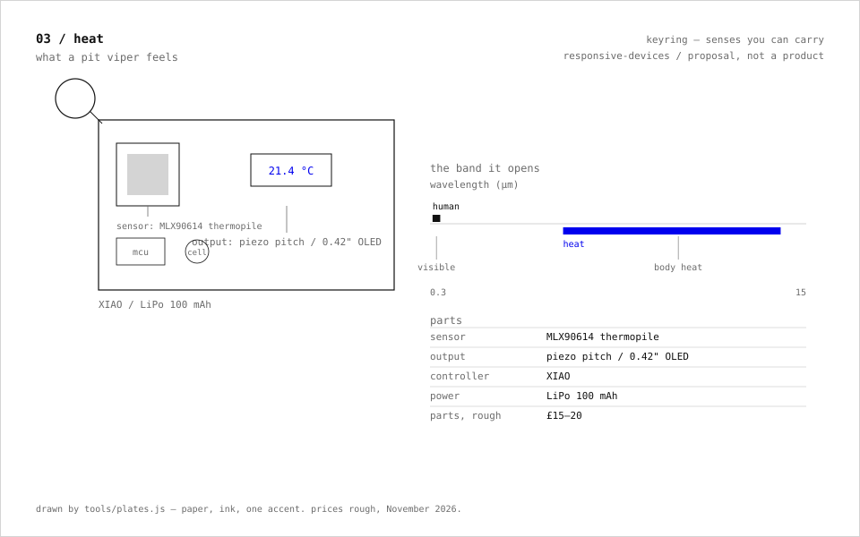
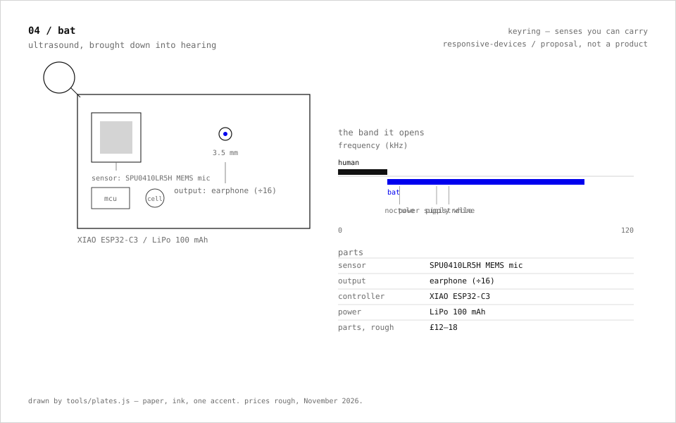
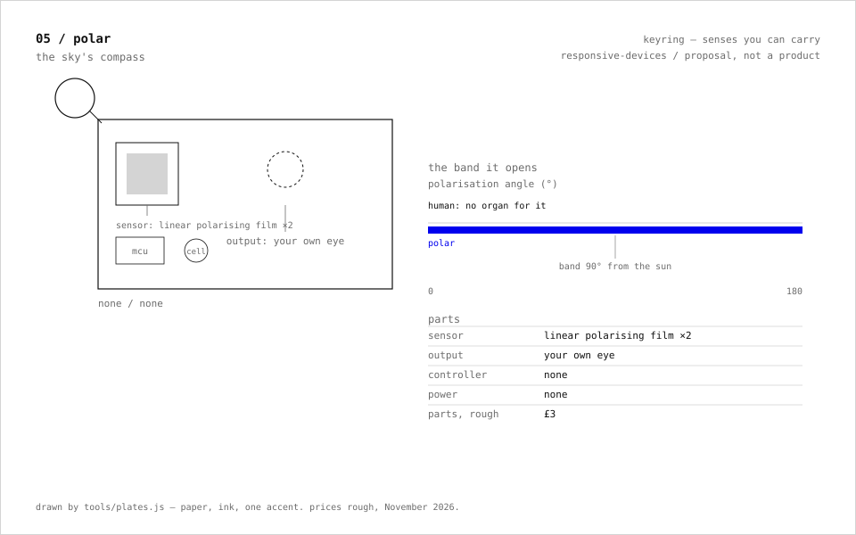
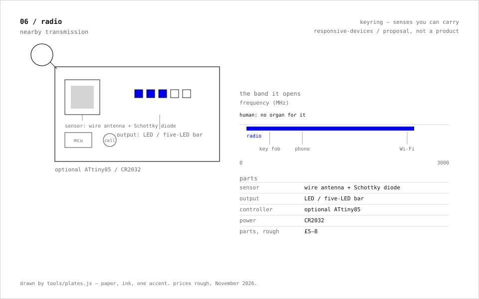
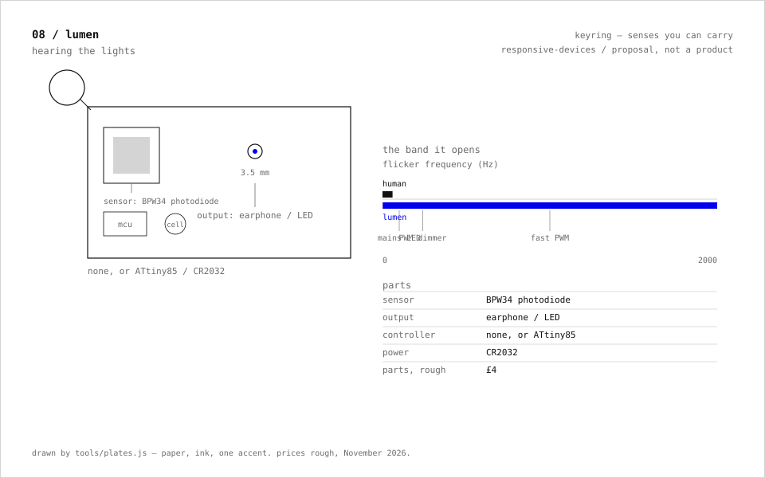

a practical, 21st-century cybernetics / DPhil, Oxford (cybernetics and the French avant-garde) / founder, Sentinus (autonomy without GPS) / writing on François Roche
thesis
The cybernetics I work from is the British work of the 1940s to 70s. Walter's tortoises (1949) showed that two sensors and two motors produce behaviour an observer reads as purposeful. Ashby's homeostat defined adaptation as a system re-selecting its own parameters until its essential variables return to range. Pask's conversation theory made learning a loop between two systems that have to agree on what they are talking about. Beer's Viable System Model specified the structure a system needs in order to keep going without outside instruction.
François Roche's practice — R&Sie(n), later New-Territories and [eIf/bʌt/c] — puts the same questions to architecture: a building is a protocol run under uncertainty, its form is a consequence of the procedure and not of a drawing, and the narrative supplied to the inhabitants is part of the mechanism. That reading is mine; Roche does not cite the cyberneticians.
My engineering work at Sentinus takes the same position for vehicles that cannot use GPS: the device must classify what it senses, decide, and act with no external reference, and the record of why it acted has to be readable afterwards. The repositories below test that position one component at a time. Each one states what it can and cannot show.
A generative architecture: stigmergic accretion under a viability invariant, from a finite material budget, that finishes as a building section and exports it as a drawing sheet — after TERMES and R&Sie(n).
2026 / javascript, zero dependencies / 19 tests / live / source
Six speculative cybernetic devices in the Archigram register, plus eight keyring senses you can build for £3–15 — each tied to a parts list, a cost and an ethics note, with firmware and drawn plates.
2026 / dossier, cc by 4.0; sketches MIT / plates / source
generative architectures
The Roche thread of this work is a set of procedures whose output is a drawing. Each runs under stated rules — support, material, an entrance kept clear — until a form exists that nobody drew, and each exports that form as a sheet with a scale bar and a title block in the scenario format R&Sie(n) used for every project: programme, area, procedure, record. viab draws a section through an accretion; random mode, a court of rods re-stacked by a robot for years after Olzweg (2006), draws a plan; humours, a dwelling whose rooms grow from their inhabitants' stress, empathy and sympathy after Une architecture des humeurs (2010), draws a plan with its doors and the interview beside it. The last two go public in the morning. The keyring plates draw the devices. All of it in ink on paper, one accent for what the rules refuse.
drawings
three sheets drawn by the procedures above, as exported from their live pages. each carries a scale bar and a title block: programme, area, procedure, record.

viab / section, seed 7 / 1,400 units of material around six chambers

random mode / plan, seed 3 / the court after the robot's moves, the entrance kept clear

humours / plan, seed 1 / six rooms, their doors, and the interview
eight keyring senses from the responsive-devices dossier, £3–15 each in parts, each with its firmware. plates drawn by the same tooling.







writing
François Roche and R&Sie(n)
A book on the practice: protocols, uncertainty, and the machine as a way of building.